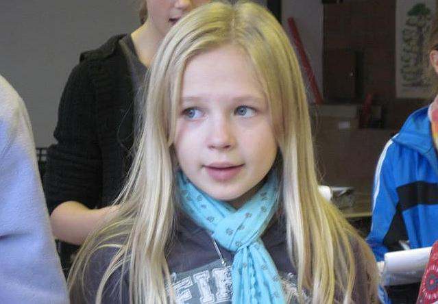
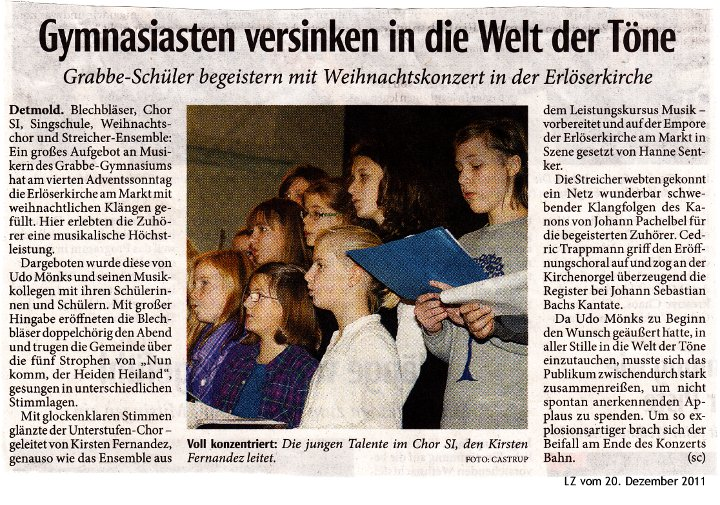
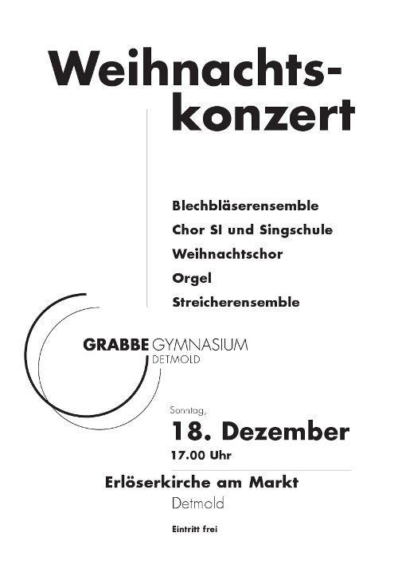

Improvisation
- zur Bildergalerie =>
- zum Vergrößern des Fotos draufklicken!

Musik machen ohne Noten
Zwei Profis zeigen den Grabbianern, wie das funktioniert: Musik als Kommunikation
Von Florian Wessel (Text & Fotos)
Am Mittwoch, 20. April 2016, waren die Profimusiker Mary Knysh aus den USA und Alexander Merz aus Deutschland im Grabbe-Gymnasium und leiteten einen Workshop zum Thema „Improvisieren“.
Im Laufe des Vormittags improvisierten die beiden Musiker mit den Schülerinnen und Schülern der Jahrgangsstufe 10. Zu Beginn kam auch die 5m in den Genuss, zwei solch tolle Musiker kennenzulernen.
Eine ganze Menge Schlaginstrumente, die Mary Knysh und Alexander Merz mitbrachten, wurden ausgeteilt und schon entwickelten die Schüler ein wahres Feuerwerk an Ideen und mitreißenden Rhythmen.
Aber auch die eigenen Instrumente der Schülerinnen und Schüler kamen zum Einsatz. In Vierergruppen entstanden Spontankompositionen voller Intensität, Leidenschaft, Nachdenklichkeit, Schönheit und leidenden Tonfolgen.
Eine neue Erfahrung: Musik machen ohne Noten!
Die Schülerinnen und Schüler des Grabbe-Gymnasiums bewiesen eine hohe Bereitschaft, neue musikalische Wege zu gehen. Sie trauten sich, in Soloeinlagen und Begleitungen musikalisch zu glänzen. Es war beindruckend, zu sehen, wie alle Schülerinnen und Schüler, egal wie lange sie ihr Instrument schon spielten, musikalisch miteinander kommunizierten und dabei unglaublich viel Freude hatten.
Vielen Dank unseren beiden Gästen und liebe Grabbianer: weiter so, ihr seid spitze!

Workshop

Berufsfeld Musik
Schülerinnen und Schüler auf dem Weg - Besuch in der Hochschule für Musik Detmold
Von Florian Wessel (Text & Fotos)
 Zehn Schülerinnen und Schüler Detmolder Gymnasien besuchten am 13.01.2016 im Rahmen des Workshops „Leistungskurs Musik - wohin soll das führen…!?“ die Hochschule für Musik in Detmold.
Zehn Schülerinnen und Schüler Detmolder Gymnasien besuchten am 13.01.2016 im Rahmen des Workshops „Leistungskurs Musik - wohin soll das führen…!?“ die Hochschule für Musik in Detmold.
Inspirierende Einblicke vermittelten die Schulmusikstudierenden den Schülerinnen und Schülern in ihre Arbeit bei der Unterrichtsplanung im Seminar unter der Leitung von Prof. Dr. Ekkehard Mascher. Sogar in unterschiedliche Unterrichte der Studierenden durfte hineingeschnuppert werden. Ein überaus innovativer Vortrag zum Nachdenken von Prof. Dr. Joachim Thalmann und Informationen rund um die Anforderungen im Leistungs- und Grundkurs ergänzten das wissenschaftliche Angebot des Tages.
Im Hallraum und im schalltoten Raum sowie in blinkenden Regieräumen des Erich-Thienhaus-Institutes wurden wir in die Feinheiten der Tonmeisterausbildung eingeweiht.
Als Ausklang durften die Instrumente ausgepackt werden und unter der kompetenten Leitung von Anja Damianov (links) wurde eifrig improvisiert!
Wir verlebten einen tollen Tag voller Inspiration und Anregungen und danken der Hochschule für Musik für die freundliche Aufnahme. Jugend musiziert
2015

Videoclip
2012
Einladung
Das Christian-Dietrich-Grabbe-Gymnasium wird am Sonntag, 16. Dezember 2012, um 19.00 Uhr ein weihnachtliches Konzert in der Erlöserkirche am Markt Detmold geben. Chöre, Instrumentalensembles und Solisten haben ein Programm einstudiert, das von den „Jubilaren“ H.L. Hassler und G. Gabrieli (beide 1612 gestorben) bis zu zeitgenössischen Komponisten (z.B. John Rutter) reicht. Der im Bundeswettbewerb Jugend musiziert mit dem dritten Preis ausgezeichnete Cedric Trappmann spielt Präludium und Fuge WV 543 von Johann Sebastian Bach.
Einen besonderen Akzent setzen junge Musikerinnen und Musiker aus dem finnischen Savonlinna, die an diesem Wochenende ihre Partnerstadt Detmold besuchen. Chor und Instrumentalisten der Taidelukio, der „Musikabteilung“ des Kunstgymnasiums Savonlinna, spielen und singen weihnachtliche und winterliche Lieder, teils original finnischen Ursprungs.
Der Eintritt zum etwa 90 minütigen Konzert ist frei.
2011
Bildergalerie

Videoclip
Das Video ist bei YouTube nicht gelistet. Es kann nur auf der Grabbe-Homepage gesehen werden und von den Freunden, die den Link kennen. Die Bewertungs- und Kommentarfunktionalität ist ausgeschaltet. hjg
LZ-Rezension

Plakat

2010

Die Aufführung
Film: Walter Hunger // Schnitt: Hajo Gärtner // Buch: Die Evangelisten
Der Videoclip ist so auf YouTube platziert, dass er im Suchfenster nicht gefunden werden kann. Er kann nur im Rahmen der Grabbe-Homepage gesehen werden und von Freunden, die den Link kennen.
Die Proben
Der Videoclip ist so auf YouTube platziert, dass er im Suchfenster nicht gefunden werden kann. Er kann nur im Rahmen der Grabbe-Homepage gesehen werden und von Freunden, die den Link kennen.